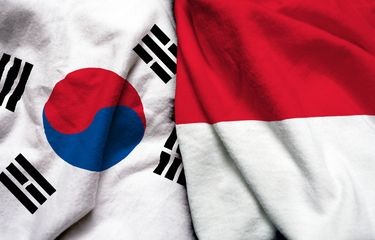
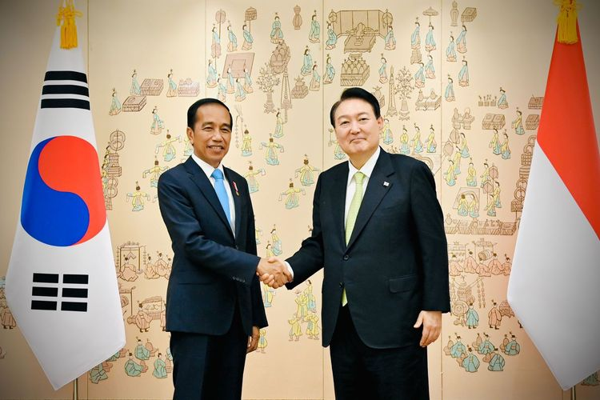
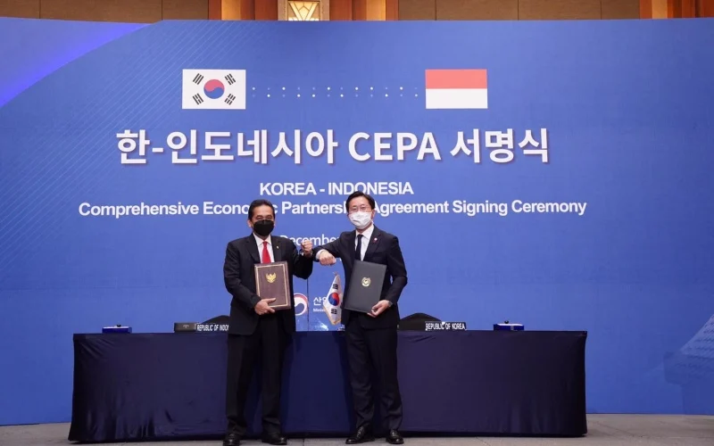

  
Kerjasama Indonesia secara regional yang mendorong terwujudnya goal ke-9 dari SDGs (Sustainable Development Goals) yaitu Infrastruktur, Industri, dan Inovasi adalah suatu program atau kebijakan dari ASEAN.
Kebijakan dari ASEAN dikenal sebagai kebijakan AEC (ASEAN Economic Community) yang mendorong inovasi dengan pembangunan infrastruktur yang berkualitas, serta industrialisasi yang inklusif dan efisien. AEC (ASEAN Economic Community) merupakan tujuan utama pada ASEAN untuk menciptakan kawasan integrasi ekonomi di daerah Asia Tenggara. AEC mendorong negara anggota ASEAN untuk bekerjasama dalam bidang perdagangan, pembangunan ekonomi, dan investasi.
Selain itu, AEC tidak hanya fokus pada pertumbuhan ekonomi, namun juga mendorong pembangunan berkelanjutan dengan memperhatikan isu-isu secara lingkungan dan sosial. Implementasi AEC dilakukan antar negara anggota ASEAN melalui berbagai perjanjian, kebijakan, dan inisiatif kolektif.
Kebijakan dari AEC terdapat UKM (Pengembangan Usaha Kecil dan Menengah) yang menjadi sangat penting dalam perekonomian di negara anggota ASEAN. UKM menyediakan akses terhadap pasar regional, pendanaan, dan pelatihan yang dapat mendorong terjadinya usaha dan industrialisasi yang mewujudkan dan terdorong goal ke-9 SDGs.
AEC memastikan bahwa UKM terlibat dan berpartisipasi aktif dalam proses integrasi ekonomi dan industrialisasi. Kerjasama secara regional ini dapat menumbuhkan hubungan yang erat antar negara yang juga meningkatkan pasar perekonomian.
AEC memberikan banyak kesempatan untuk UKM yang mengurangi adanya hambatan dalam perdagangan seperti pajak atau tarif masuk yang tinggi. AEC memberikan program pelatihan dalam hal cara manajemen bisnis, pemasaran secara digital, juga teknologi dan industrialisasi yang hijau. Ini meningkatkan daya saing UKM yang memberikan kesempatan bagi perusahaan baru. AEC memastikan tidak hanya perusahaan besar namun UKM juga terlihat.
Semua ini memperkuat dan mendorong tercapainya goal ke-9 SDGs karena adanya kerjasama secara regional. Yang memastikan ekonomi yang kompetitif dan membangun masyarakat yang tidak adanya ketimpangan sosial serta mencapai tujuan SDGs bersama.
Melalui AEC, dapat terdorong industrialisasi karena telah menciptakan basis produksi yang terhubung, Dalam hal efektivitas dan efisien memproduksi barang. Juga terdorongnya investasi dalam sektor manufaktur yang ramah lingkungan dan menggunakan teknolog modern Yang sangat penting dalam menciptakan pertumbuhan ekonomi yang berkelanjutan. Manufaktur yang ramah lingkungan, berinovasi, efisiensi tinggi, rendah karbon emisi, dan sekaligus meningkatkan daya saing produk di pasar global serta meningkatkan standar produksi di Indonesia. Kebijakan yang didukung ini dapat mencipta nya zona industri yang baru yaitu berinovasi, ramah lingkungan, dan efisien. AEC memiliki potensi besar untuk menjadi kekuatan ekonomi global. Namun, keberhasilannya memerlukan komitmen penuh dari semua negara anggota ASEAN. Untuk tantangan seperti kesenjangan pembangunan, harmonisasi kebijakan, dan penguatan institusi kawasan secara keseluruhan dan bersama.
Secara tidak langsung, dengan adanya kerjasama antar negara dengan AEC dalam hal perekonomian, juga mendorong tercapainya goal ke-9 SDGs yaitu Infrastruktur, Industri, dan Inovasi.